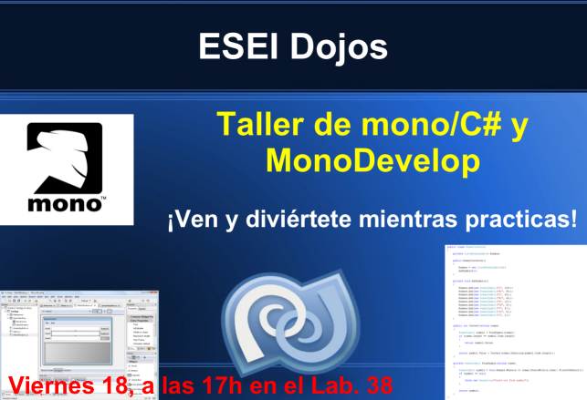

Resumen
En este taller se pretende dar una introducción al desarrollo de aplicaciones visuales con C# sobre mono, y MonoDevelop como IDE.
Contenido
- Cartel
- Transparencias
- Complementos necesarios:
- GtkUtil
- Archivo mp3 obtenido del banco de recursos de sonido del ministerio del interior: musicaAfricana.mp3
- Actividades realizadas (código completo para MonoDevelop)